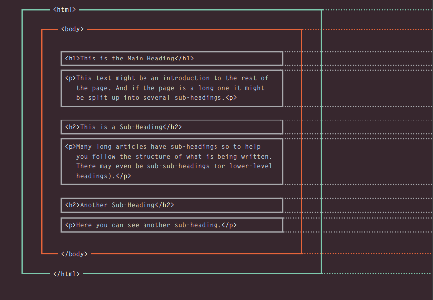
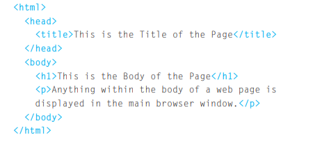
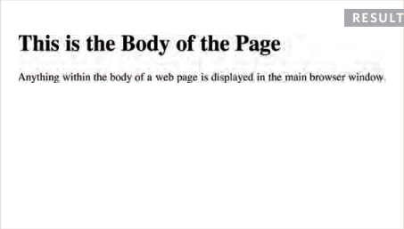
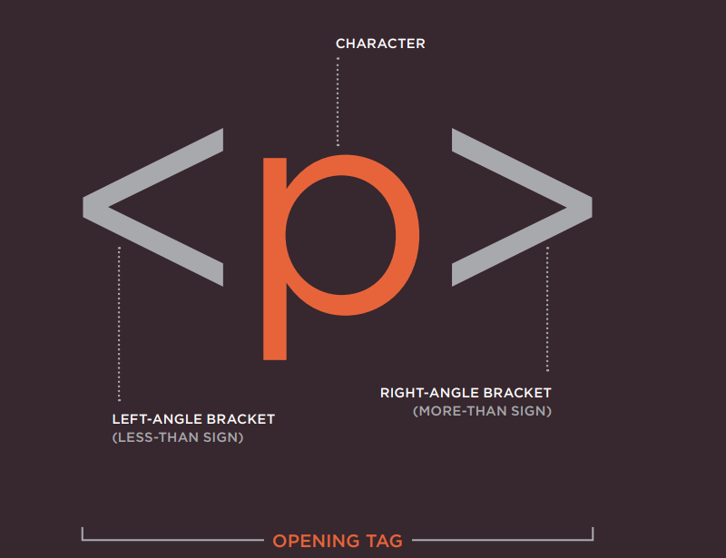
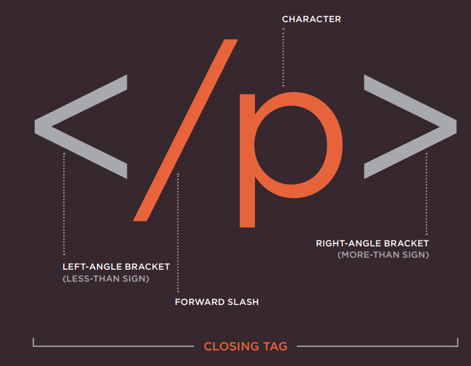
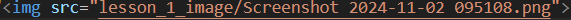
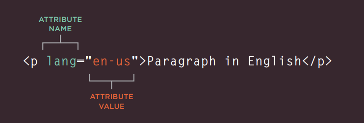

 Html hujjat structurasi yani tuzilishi hisoblanad.
 html elementlari ikk xil bo'ladi juft elementlar va toq elementlar bo'ladi. Bularning bir biridan farqi Juft teglar (elementlar)ning ochilishi va yopilishi bo'ladi.
 ko'rganingizdek brauzerda ko'rinishi kerak bo'lgan qiymat ikki teg orasida yozilmoqda. "" Toq teglar esa faqat bitta tegdan iborat bo'ladi Masalan  ko'rganingizdek bu tegning jufti yo'q u bitta tegda iborat brauzerda ko'rinadigan qiymat esa shu teg ichidagi atributda beriladi.
Keling shu teglar ichidagi keladigan atributlar haqida bir oz gaplashamiz.Atribut bu tegning qo'shimcha xususiyati xisoblanadi Masalan  Atribut bu haqida yana gaplashamiz faqat keyinroq :)